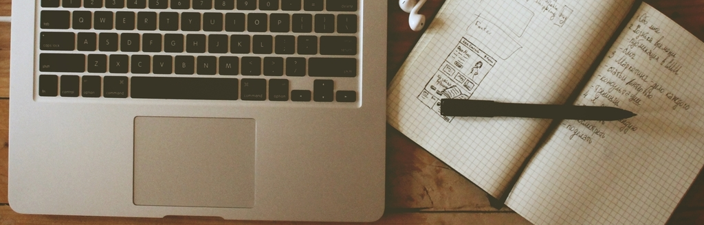

<!DOCTYPE html>
<html>
  <head>
    <meta charset="utf-8">
    <link href="http://nsmag.comquas.com/style/style.css" rel="stylesheet" type="text/css">
    <link href="http://mmwebfonts.comquas.com/fonts/?font=mon3" rel="stylesheet" type="text/css">
    <link href="http://cdnjs.cloudflare.com/ajax/libs/highlight.js/8.4/styles/default.min.css" rel="stylesheet" type="text/css">
    <link href="http://nsmag.comquas.com/style/tomorrow.css" rel="stylesheet" type="text/css">
    <script src="http://nsmag.comquas.com/js/highlight.pack.js"></script>
    <meta name="Description" content="App Design စတင်လေ့လာသူများအတွက်">
    <meta name="Keywords" content="nsmag,ios,android,magazine,myanmar">
    <script type="text/javascript">
      (function(w,d,t,u,n,s,e){w['SwiftypeObject']=n;w[n]=w[n]||function(){
        (w[n].q=w[n].q||[]).push(arguments);};s=d.createElement(t);
        e=d.getElementsByTagName(t)[0];s.async=1;s.src=u;e.parentNode.insertBefore(s,e);
        })(window,document,'script','//s.swiftypecdn.com/install/v1/st.js','_st');
        _st('install','kayVVh9MsqUzrz-J_3Hv');
        
        
    </script>
    <title>For designer who start learning App Design
    </title>
  </head>
  <body>
    <header class="siteheader content">
      <div class="siteheader-menu">
        <div class="site-header-logo"><a href="http://nsmag.comquas.com" class="logo">NSMag</a></div>
        <ul class="site-header-menu-list">
          <li><a href="http://j.mp/1EGM7ti">iOS</a></li>
          <li><a href="http://j.mp/18fooGH">Android</a></li>
          <li><a href="http://nsmag.comquas.com/subscribe.html">Subscribe</a></li>
          <li>
            <form>
              <input id="search-input" type="text" class="st-search-input">
            </form>
          </li>
        </ul>
      </div>
    </header>
    <div id="detail" class="content">
      <h1>For designer who start learning App Design</h1>
      <div class="description">App Design စတင်လေ့လာသူများအတွက်</div>
      <div class="author">ရေးသားသူ : <span class="authorname">saturngod</span></div>
    </div>
    <div class="content detailArticle"><p>App design ဟာ web site design နဲ့ မတူပါဘူး။ ဒီလိုပါပဲ Android Appp Design ဟာ iOS app design နဲ့ မတူဘူး။ နည်းနည်းလေးတော့ ကွာတယ်။ iOS အတိုင်း Android မှာ ပုံစံ တူဖြစ်အောင် လုပ်မယ်ဆို လုပ်လို့ရပေမယ့် user experience နဲ့ android မှာ အသုံးပြုပုံနဲ့ iOS မှာ အသုံးပြုပုံ ကွာပါတယ်။ ကျွန်တော် ကိုယ်တိုင် designer နဲ့ တွဲလုပ်တဲ့ အခါ အချို့ designer တွေက web designer ကနေ app design ကို ဆွဲတဲ့ အခါမှာ အဆင်မပြေတာလေးတွေ ရှိပါတယ်။ တကယ်လို့ web designer က နေ app designer ကို ပြောင်းမယ် ဆိုရင် အောက်က အချက်လေးတွေက အထောက် အကူပြုပါလိမ့်မယ်။</p>
<h2 id="read-design-pattern">Read design pattern</h2>
<p><a href="https://developer.android.com/design/patterns/index.html">Android Design Patterns</a> နှင့် <a href="https://developer.apple.com/library/ios/documentation/userexperience/conceptual/mobilehig/">iOS Human Interface Guidelines</a> ကို မဖတ်ဖူးလျှင် ဖတ်ထားသင့်ပါတယ်။ Web Design နဲ့ App Design မတူပါဘူး။ ဒါကြောင့် designer အနေနဲ့ web design က လာတဲ့ အခါမှာ သက်ဆိုင်ရာ platform ရဲ့ Design Patterns ကို ဖတ်ထားကြည့်ဖို့ လိုပါလိမ့်မယ်။</p>
<p>ဒါ့အပြင် iOS အတွက် အခြားသူတွေ ဘယ်လိုဖန်တီးထားလဲဆိုတာကို <a href="http://pttrns.com">pttrns</a> မှာ လေ့လာနိုင်ပါတယ်။ Android အတွက်ကိုတော့ <a href="http://androidpttrns.com/">androidpttrns</a> မှာ လေ့လာနိုင်ပါတယ်။</a></p>
<h2 id="use-png-for-all-images">Use PNG for all images</h2>
<p><p>Designer တွေ အနေနဲ့ Developer ကို icon တွေ ပုံတွေ ဖြတ်ပြီး ပေးတဲ့ အခါမှာ PNG ကို သုံးပါ။ PNG ကို အသုံးပြုတဲ့ အခါမှာ ဖြစ်နိုင်လျှင် background ကို transparent ထားပါ။ JPG ကို မသုံးပါနှင့်။</p>
<h2 id="use-background-tranparent-for-icons">Use background tranparent for icons</h2>
<p>Icons တွေ အားလုံးကို background ကို အကြည်ထားပေးပါ။ backgorund color ထည့်လိုက်တဲ့ အခါမှာ နောက်ထပ် design ပြောင်းသွားတဲ့ အခါမှာ developer ကိုယ်တိုင် icons တွေကို ပြန်ရွှေ့လို့ မရဖြစ်သွားပါလိမ့်မယ်။ အဲဒီ အခါ designer ကို ပြန်ပြီး ပြောရတဲ့ အခါ နှစ်ဖက် စလုံး အချိန်ကုန် လူပင်ပန်းဖြစ်ပါလိမ့်မယ်။ ဒါကြောင့် icons တွေ အားလုံးကို background မသုံးပါနှင့်။</p>
<h2 id="high-resoultion">High resoultion</h2>
<p>iPhone အတွက် retina display resoultion က 1136 px X 640 px ပါ။ iPad အတွက် retina ကတော့ 2048 px X 1536 px ပါ။ ဒါကြောင့် iOS အတွက် design ဆွဲတဲ့ အခါမှာ retina display size ပေါ်မှာ မူတည်ပြီး ဆွဲပါ။ ဖြစ်နိုင်လျှင် desing တစ်ခုလုံးကို vector ကို အသုံးပြုသင့်ပါတယ်။ ယခု အချိန်မှာ 2048 က အများဆုံး ဆိုပေမယ့် နောင်တချိန်ကို ကျွန်တော်တို့ မပြောနိုင်ပါဘူး။ iPhone Retina ထွက်လာခဲ့တုန်းက design တွေက vector မဟုတ်ပဲ ပုံမှန် bitmap ကို သုံးပြီးဆွဲခဲ့မိလို့ high resoultion တွေ အကုန်ပြန်ဆွဲခဲ့ရတဲ့ အတွေ့အကြုံတွေကို မမေ့သင့်ပါဘူး။</p>
<h2 id="try-sketch">Try sketch</h2>
<p>Photoshop file တစ်ခုလုံးကို developer ကို ပေးလိုက်တဲ့ အခါ ပုံမှန်အားဖြင့် developer တွေ အနေနဲ့ ဘာမှ လုပ်လို့ မရပါဘူး။ photoshop ကို pirate ဒါမှမဟုတ် ဝယ်သုံးထားတဲ့ သူမှ သာ photoshop ကို ဖွင့်နိုင်လိမ့်မယ်။ မဝယ်သုံးနိုင်တဲ့သူ pirate မသုံးချင်တဲ့ developer တွေ အနေနဲ့ psd က အဆင်မပြေလှဘူး။ နောက်ပြီး photoshop ဟာ mobile app development အတွက် design ဆွဲထားတာ မဟုတ်ပါဘူး။ ဒါကြောင့် sketch ကို ဝယ်ပြီး သုံးကြည့်ပါ။ သုံးရတာ လွယ်သလို vector format ဖြစ်တာကြောင့် size အရွယ်အစားက လိုအပ်သလို ပြောင်းလဲ နိုင်ပါတယ်။ Sketch မှာ Art board တွေ ခွဲပြီး ဆွဲခြင်းဟာ export လုပ်တဲ့ အခါမှာ အတော်လေးကို အဆင်ပြေပါတယ်။ developer ကော designer အတွက်ပါ အချိန်ကုန် လွယ်ကူစေပါတယ်။</p>
<h2 id="cut-images-for-developer">Cut images for developer</h2>
<p>Designer အနေနဲ့ ပုံတစ်ခုလုံးကို photoshop မှာ ဆွဲထားပြီးတော့ PSD file ကို developer ကို ပေးလိုက်ရင် developer အများစုက ဘာမှ လုပ်တတ်မှာ မဟုတ်ပါဘူး။ သူတို့အနေနဲ့ photoshop ကို ထပ်ပြီး လေ့လာဖို့ အချိန်ထပ်ပေးနေရပါလိမ့်မယ်။ ဒါကြောင့် လိုအပ်တဲ့ ပုံတွေ အားလုံးကို cut လုပ်ပြီး ပေးပါ။ ဖြစ်နိုင်လျှင် folder တွေ ခွဲပြီးတော့ ပေးပါ။ Home , Profile စသည် ဖြင့် folder တွေ ခွဲပြီး folder ထဲမှာ သက်ဆိုင်ရာ image တွေ cut လုပ်ထားတာတွေ ထည့်ပြီး ပေးခြင်းအားဖြင့် developer အနေနဲ့ ပုံတွေ လိုက်ရှာရတဲ့ အချိန် သက်သာစေပါတယ်။ တကယ်လို့ sketch သုံးမယ်ဆိုရင် sketch file name ကို category အနေနဲ့ ပေးထားပြီး sketch file တစ်ခုထဲမှာ art box တွေ ခွဲပြီး ထည့်ထားခြင်းဟာ ရေရည်အတွက် အဆင်ပြေပါတယ်။</p>
<h2 id="check-dribble">Check Dribble</h2>
<p><a href="http://dribbble.com/">Dribbble</a> မှာ နိုင်ငံတကာ designer တွေရဲ့ app design တွေ website design တွေ ရှိပါတယ်။ ပုံမှန် နေ့စဉ် ကြည့်သင့်တဲ့ site ဆိုလည်း မမှားပါဘူး။ Desing ဝါသနာ ပါတဲ့ သူတွေ အတွက် အသုံးဝင်ပါလိမ့်မယ်။</p>
<h2 id="are-you-using-ios-or-android-">Are you using iOS or Android ?</h2>
<p>တကယ်လို့ သင့် အနေနဲ့ Android ကို အသုံးပြုနေကြဆိုရင် iOS design ဆွဲတဲ့ အခါမှာ android က use experience တွေကို အပြည့်အဝ ထည့်သွင်း စဉ်းစားလို့မရဘူး။ ဒီလိုပါပဲ iOS ကို အသုံးပြုတဲ့ designer အနေနဲ့ Android design ဆွဲတဲ့ အခါမှာ iOS က user experience ကို အပြည့်အဝ ထည့်သွင်းလို့ မရပါဘူး။ iOS မှာ ဘာတွေ လုပ်နိုင်တယ် Android မှာ ဘာတွေ လုပ်နိုင်တယ်ဆိုတာကို နားလည်ထားဖို့လိုပါတယ်။ platform ၂ ခု လုံးရဲ့ UX ပိုင်းကတော့ နီးစပ်မှုတော့ ရှိပါတယ်။ အနည်းငယ် ကွဲပြားတယ်ဆိုတာကို သိဖို့ လိုပါတယ်။</p>

    </div>
    <script>hljs.initHighlightingOnLoad();</script>
    <script src="http://www.comquas.com/comquas_ads.js"></script>
    <div class="line"></div>
    <div id="comquas-ads" class="content"></div>
    <footer class="endline content">© <a href="http://www.comquas.com">COMQUAS </a>2015</footer>
  </body>
</html>